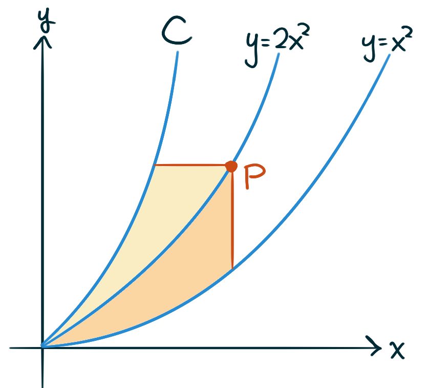

Integration by Substitution & Areas Between Curves
Evaluate as many of these indefinite integrals
as you need to feel confident with
the technique of substitution (change of coordinates).
Aim to be not just familiar, but adept at this skill.
Don’t forget your \(+C\)s!
Calculate the area of the region in the \(x,y\)-plane
enclosed between the curves given by the equations
\(y=x^2\) and \(y=x+6.\)
What’s the area of a single “hump”
under the graph of sine?
Consider the region enclosed by the curves
\(y=x^2\) and \(y=x^3.\)
Write two different integrals,
one with respect to \(x\) and the other with respect to \(y,\)
that represent the area of this region,
then calculate the values of each of these integrals
to verify they have the same value.
What’s the area of the triangle in the \(x,y\)-plane
with vertices located at coordinates
\((1,1),\) \((7,2),\) and \((5,8)?\)
Calculate the area of the region in the \(x,y\)-plane
enclosed between the curves given by the equations
\(y=\sqrt{x}\) and \(y=6-x\) and \(y=0.\)
Protip: integrate with respect to \(y\)
so you can set it up as a single integral.
Calculate the area of the region in the \(x,y\)-plane
enclosed between the curves given by the equations
\(y=\sec^2(x)\) and \(y=8\cos(x).\)
The curves \(y=\sin(x)\) and \(y=\cos(x)\)
enclose a region consisting of
infinitely many repeating copies of a single shape.
What’s the area of this shape?
There is a line through the origin that divides the region
bounded by the parabola \(y=x-x^2\) and the \(x\)-axis
into two regions with equal area.
What is the slope of that line?
Prove that if \(f\) is continuous, then
\[
\int\limits_0^x f(u)(x-u)\,\mathrm{d}u
\;\;=\;\;
\int\limits_0^x \left(\int\limits_0^u f(t)\,\mathrm{d}t\right)\,\mathrm{d}u
\]
How can we interpret this equation geometrically?
If the tangent at a point \(P\) on the curve \(y = x^3\)
intersects the curve again at \(Q\), let \(A\) be the
area of the region bounded by the curve and the line segment \(PQ\).
Let \(B\) be the area of the region
defined in the same way starting with \(Q\) instead of \(P\).
What is the relationship between \(A\) and \(B\)?
The figure shows three curves, \(y=x^2,\) \(y=2x^2,\) and \(C,\)
such that for every point \(P\) on the middle curve \(y = 2x^2\),
the shaded areas are equal. Find an equation for \(C\).
